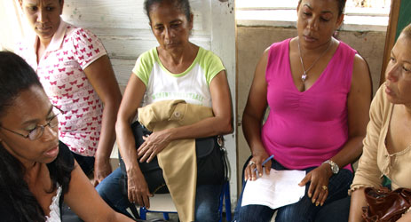

Crowdfunding: Un canal adicional para financiarlo todo
Antes de avanzar en este esquema de captación de recursos y sus diferentes tipologías, se hace obligatorio arrojar una definición lo suficientemente clara que permita a lector, comprender el concepto.
Crowdfunding, no es más que el concepto utilizado para destacar el esfuerzo colectivo de un grupo de individuos y/o instituciones que aportan recursos financieros para apoyar una determinada causa. En otras palabras, la Financiación en Masa, es la evolución del Telemaratón de los años 80’s y 90’s donde la suma de diferentes pequeños esfuerzos proveen grandes recursos pero en pequeñas dosis. En esa época el medio utilizado para el aporte de recursos era el teléfono y una emisora de televisión o radio. Ahora el medio es el Internet el cual trae consigo mayor eficiencia en términos de costos y confiabilidad.
Así como los telemaratones se establecían generalmente para captar recursos para causas exclusivamente sociales, el Crowdfunding ha logrado diversificar este propósito, pasando desde particularidades como el financiamiento del aniversario de un pequeño felino, hasta la captación de recursos para el desarrollo de obras físicas como por ejemplo albergues, hogares ancianos, etc.. Bajo este esquema, diferentes pequeños esfuerzos proveen grandes recursos.
Solo en Estados Unidos, líder en el sector con más de 600 plataformas de Crowdfunding, en el año 2012 se recaudaron aproximadamente US$1,6 Billones, seguido de Europa con US$945 Millones y luego Oceanía y Asia con US$76 y US$33 Millones respectivamente, según la firma de investigación Massolution. En la región de America Latina, se recaudaron US$800,000 reflejando un 0.5% del monto captado en los Estados Unidos.
Portales como Kicstarter en Estados Unidos han logrado financiar alrededor de 44,000 iniciativas, levantando US$693 Millones desde su lanzamiento en el 2009, con una participación de 4.4 millones de personas. La experiencia en la región se circunscribe a espacios como IDEA.me, IMPACT.me entre otros, cuyo propósito principal es el apoyo a emprendimientos sociales en las áreas de salud, educación y cultura. De manera general, las modalidades de colaboración pueden ser “todo o nada”, bajo la cual si una iniciativa no alcanza la totalidad de los recursos que necesita, el dinero se devuelve a los aportantes o colaboradores; y el modo “flexible” donde el monto recaudado es entregado a los proponentes y aunque no se llegue al 100% del monto solicitado, el receptor de los fondos deberá tener un plan alternativo que permita asegurar a los colaboradores el destino de los recursos. El modelo de negocio es simple, un porcentaje de la recaudación, que usualmente oscila entre el 2% -5%, es para la sostenibilidad de la plataforma.
Tomando en consideración la penetración del Internet en la región y sus 147 millones de usuarios, en America Latina existe un enorme potencial para expandir nuevos modelos de financiamiento a micro y pequeños empresarios a través del Crowdfunding marcado especialmente por la penetración de las redes sociales, las cuales pueden llegar a diversos blancos de público. El correo electrónico, el Facebook, Twitter, Tumblr, Pinterest, son herramientas excelentes para llegar a un número de personas jamás antes soñado por los organizadores de Telemaratones, tomando en consideración que los latinoamericanos son sociales tanto en la vida real como en la virtual, si se toma el dato de que el 94% de los 147 millones de usuarios acceden a Facebook, según las cifras de la firma de investigación de medios digitales ComScore.
No obstante las oportunidades antes descritas, el desafío radica en la credibilidad, los niveles de penetración y la concentración de acceso al internet. A mayor penetración, mayor flujo de transacciones monetarias son realizadas por este medio y por tanto los niveles de seguridad son mayores. A menor penetración, el limitado uso impide los niveles de confort necesarios para generar confianza en las eventuales transacciones. Por lo anterior, las plataformas de crowdfunding que surjan en la región, deberán tener como público meta, segmentos de la población que tengan acceso al internet y que en cierta medida estén acostumbrados a realizar compras por este canal.
En el caribe, la Republica Dominicana puede ser un excelente laboratorio por dos razones principales: un incremento de organizaciones sociales lideradas por jóvenes “conectados” que dan uso intensivo a las redes sociales para promover los objetivos de sus movimientos; y los niveles de transacciones realizadas a través del internet reflejadas en los niveles de importaciones que realizan las empresas de couriers y envíos desde los Estados Unidos hacia RD, así como transacciones locales para pagos de servicios. Estas dos características aunadas al creciente empoderamiento social dominicano, pueden ser el caldo de cultivo que permitan probar la financiación en masa o Crowdfunding en el país.

Crowdfunding: A channel for financing all kinds of things
In spite of the large amounts of information available on digital media, few in Latin America know about the concept of “crowdfunding.” There are currently about 14 virtual spaces in countries like Brazil, Argentina and Chile, timidly testing out this mechanism for raising funds for a variety of purposes.
Before going on to talk further about this fundraising scheme and its different types, I should try to better define the concept with some examples, to give the reader an idea of the model.
Crowdfunding is a collective effort of a group of individuals and/or institutions that provide financial resources to support a particular cause. In other words, it is the evolution of the “Telethon” of the 80's and 90's, in which small efforts add up to provide a large amount of money. Back then, the media used were the telephone and a television or radio station. Today the medium is the Internet, which brings greater efficiency in terms of cost and reliability.
While telethons were generally used to raise funds social causes, crowdfunding has managed to diversify its purpose, raising money for everything from a kitten’s birthday party to of the construction of physical works such as shelters and nursing homes. Under this scheme, different small efforts provide great resources.
In the U.S. alone, an industry leader with over 600 crowdfunding platforms, approximately $1.6 billion was raised in 2012,, followed by Europe with $945 million and then Oceania and Asia with $76 and $33 million, respectively, according to the research firm Massolution. Portals like Kickstarter in the U.S. have managed to finance some 44,000 initiatives, raising $693 million from 4.4 million people since its launch in 2009.
In Latin America, $800,000 was raised in 2012, equivalent to 0.5% of the amount raised in the United States that same year. The region’s experience is limited to sites like IDEA.me and IMPACT.me, whose primary purpose is to support social enterprises in the areas of health, education and culture. Generally, the model of cooperation is "all or nothing," meaning that if an initiative does not raise all the resources needed, the money is returned to the contributors or collaborators. A second model is called "flexible," in which the amount collected is held by the initative’s backers and if it does not reach 100% of the goal, there must be an alternative plan that would ensure the use of the resources. The business model is simple, a percentage of the funds raised, which usually ranges from 2-5%, is dedicated to sustaining the platform.
Considering the level of Internet penetration in the region and its 147 million users, in Latin America there is enormous potential to expand new models of financing micro and small entrepreneurs through erowdfunding, especially through social networks, which can reach different target audiences. Email, Facebook, Twitter, Tumblr, and Pinterest are all excellent tools for reaching a number of people never before dreamed by the organizers of telethons, considering that Latin Americans are very social both in real and virtual life—94% of those 147 million Internet users are Facebook members, according to figures from the research firm ComScore Digital Media.
However promising the opportunities described above, the challenges lie in credibility, penetration levels and the concentration of Internet access. The higher the Internet penetration, the greater the flow of monetary transactions, and therefore security levels are higher. A lower Internet penetration prevents the comfort levels needed to generate confidence in any transaction. Therefore, crowdfunding platforms emerging in the region should target public segments of the population that have access to the Internet and have used it to some extent to make purchases.
In the Caribbean, the Dominican Republic can be an excellent laboratory for two main reasons: an increase in "connected" youth-led social organizations that use social networks intensively to promote the objectives of their movements, and the levels of transactions through the Internet, reflected in numbers of imports by courier and shipping companies from the U.S. to the D.R. These two characteristics coupled, with growing Dominican social empowerment can be the breeding ground to allow crowdfunding platforms to be tested in the country.